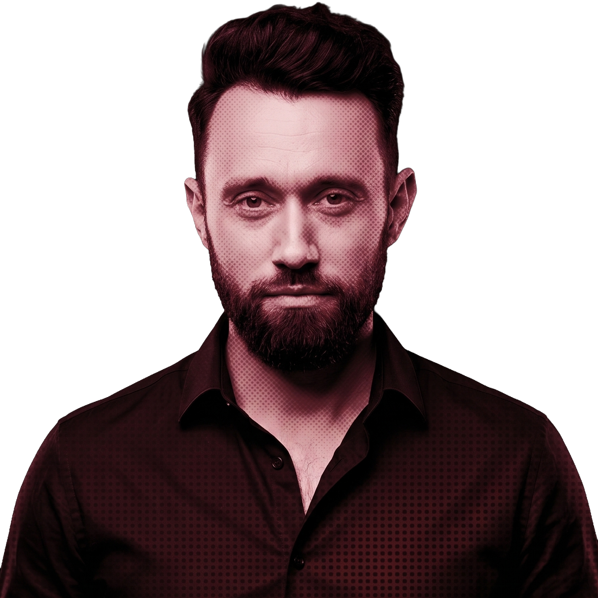

01 · Kim jestem
solidna technologia, dopracowana estetyka
Od ponad 6 lat zajmuję się tworzeniem stron i aplikacji internetowych. Jako Software Developer dostarczam rozwiązania łączące solidną technologię z dopracowaną warstwą wizualną.

Od ponad 6 lat zajmuję się tworzeniem stron i aplikacji internetowych. Jako Software Developer dostarczam rozwiązania łączące solidną technologię z dopracowaną warstwą wizualną.
Jeśli prowadzisz biznes i potrzebujesz strony, która szybko zaprezentuje Twoje najmocniejsze atuty i zbuduje profesjonalne pierwsze wrażenie – zajmuję się tym kompleksowo. Projektuję architekturę tak, aby działała nie tylko jako nowoczesna wizytówka, ale również wspierała kluczowe procesy w firmie poprzez dedykowane konfiguratory, systemy rezerwacji czy rozwiązania e-commerce.
Ścisłą logikę inżynierską łączę z perspektywą twórcy. Doświadczenie w produkcji muzycznej i realizacji wideo przekłada się na moje wyczucie detali, kompozycji i dynamiki. To bezpośrednio wpływa na płynność interakcji i animacji na tworzonych przeze mnie stronach. W codziennej pracy wykorzystuję zaawansowane narzędzia oparte na AI, optymalizując proces powstawania i utrzymania kodu.
Jeśli planujesz realizację nowego projektu biznesowego lub szukasz wsparcia programistycznego do swojego zespołu – zapraszam do kontaktu.
Zapraszam do kontaktu →